Plackett-Burman screening of 6 query engine parameters for join performance and memory pressure
| Factor | Low | High | Unit |
|---|---|---|---|
join_algorithm | hash | sort_merge | |
hash_table_mb | 256 | 4096 | MB |
sort_buffer_mb | 64 | 512 | MB |
broadcast_threshold_mb | 10 | 256 | MB |
adaptive_execution | off | on | |
partitions | 50 | 400 | count |
Fixed: engine = spark_sql, data_size_gb = 100
| Response | Direction | Unit |
|---|---|---|
query_time_s | ↓ minimize | s |
peak_memory_gb | ↓ minimize | GB |
The Plackett-Burman Design produces 8 runs. Each row is one experiment with specific factor settings.
| Run | join_algorithm | hash_table_mb | sort_buffer_mb | broadcast_threshold_mb | adaptive_execution | partitions |
|---|---|---|---|---|---|---|
| 1 | sort_merge | 4096 | 512 | 10 | off | 50 |
| 2 | hash | 256 | 512 | 256 | off | 50 |
| 3 | hash | 4096 | 64 | 256 | off | 400 |
| 4 | sort_merge | 4096 | 512 | 256 | on | 400 |
| 5 | hash | 4096 | 64 | 10 | on | 50 |
| 6 | sort_merge | 256 | 64 | 256 | on | 50 |
| 7 | hash | 256 | 512 | 10 | on | 400 |
| 8 | sort_merge | 256 | 64 | 10 | off | 400 |
| Feature | Value |
|---|---|
| Design type | plackett_burman |
| Factor types | continuous (4), categorical (2) |
| Arg style | double-dash |
| Responses | 2 (query_time_s ↓, peak_memory_gb ↓) |
| Total runs | 8 |
Generated from actual experiment runs using the DOE Helper Tool.
Top factors: hash_table_mb (25.2%), adaptive_execution (21.3%), partitions (20.5%).
Pareto Chart
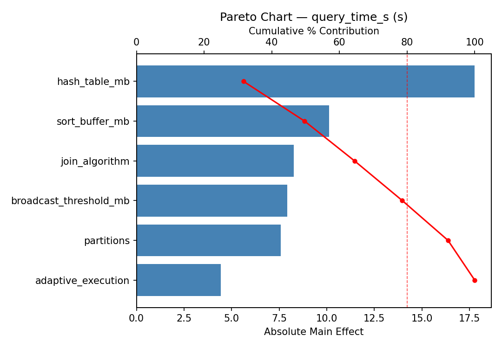
Main Effects Plot
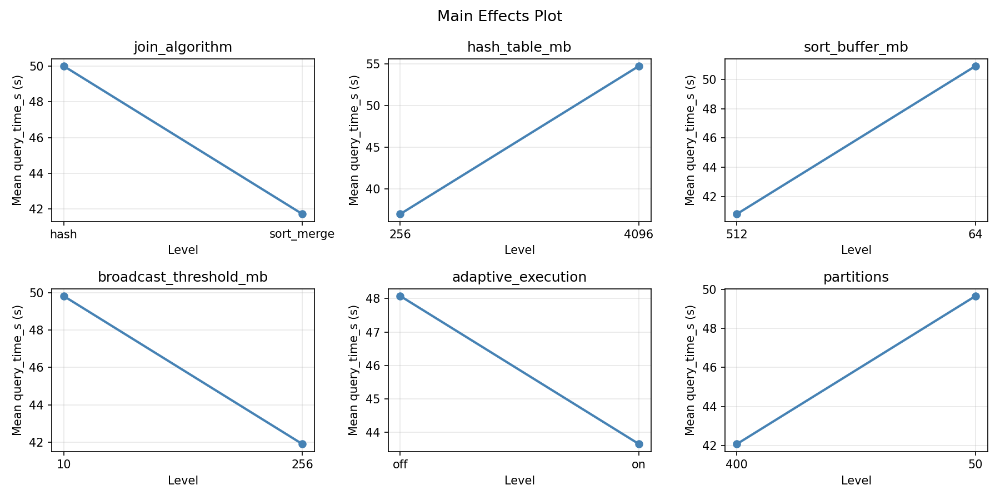
Top factors: partitions (26.2%), hash_table_mb (18.8%), broadcast_threshold_mb (18.2%).
Pareto Chart
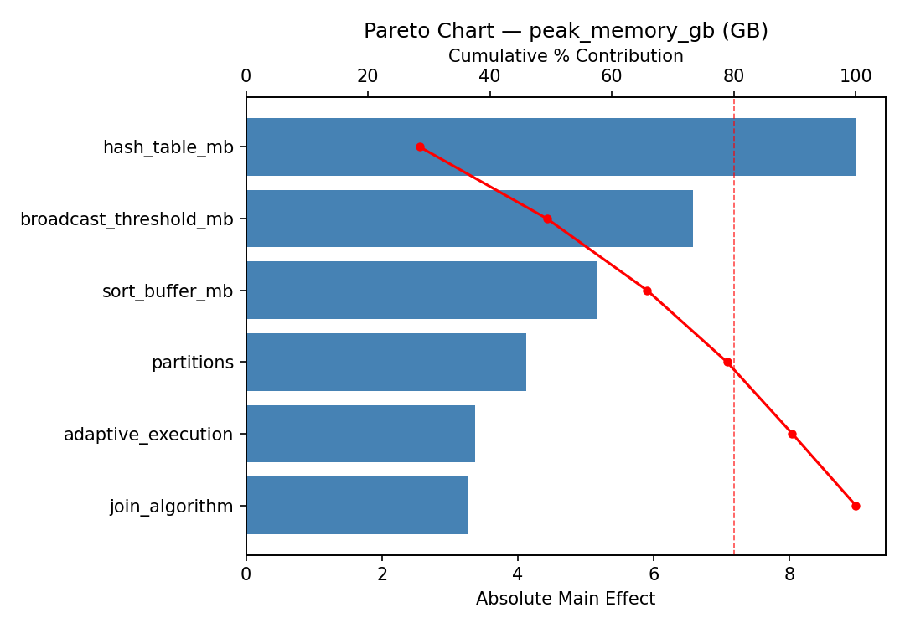
Main Effects Plot
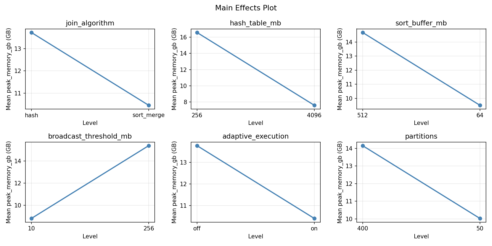
3D surfaces fitted with quadratic RSM. Red dots are observed data points.
peak memory gb broadcast threshold mb vs partitions
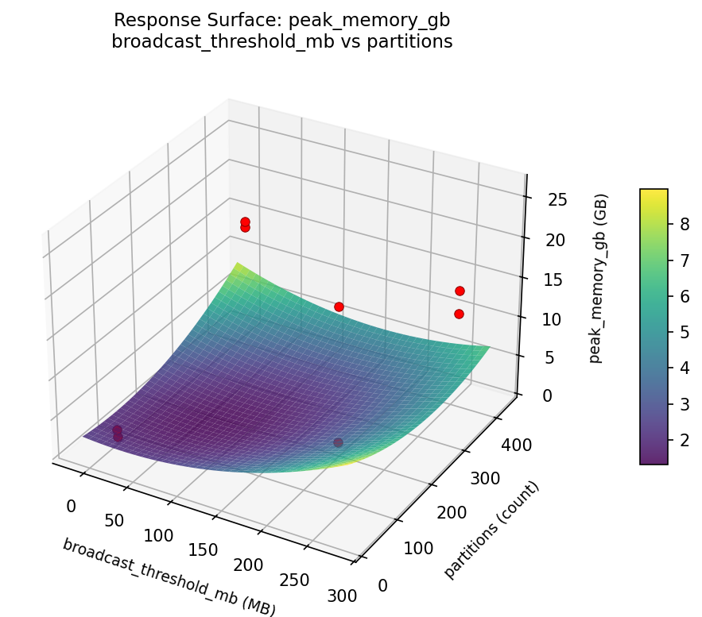
peak memory gb hash table mb vs broadcast threshold mb
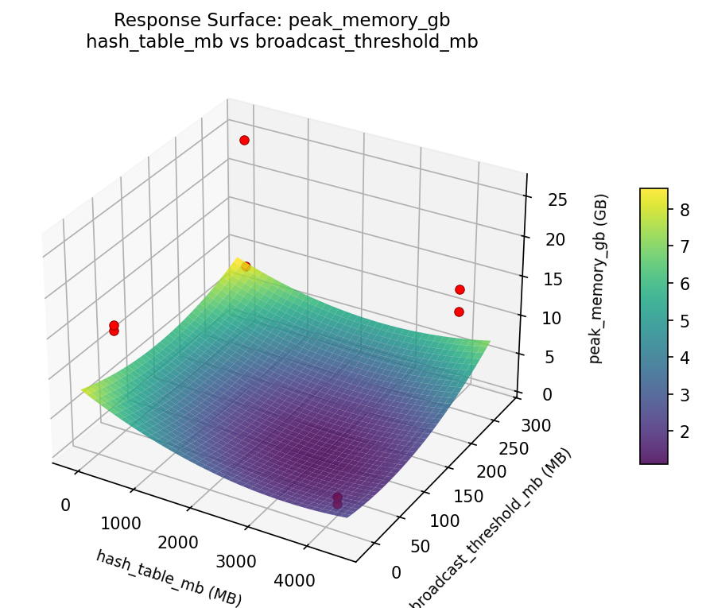
peak memory gb hash table mb vs partitions
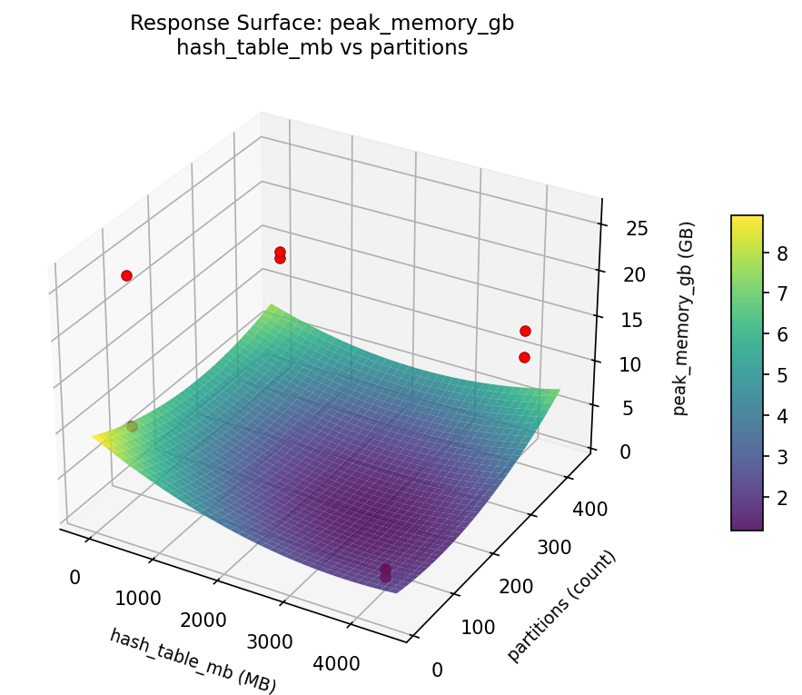
peak memory gb hash table mb vs sort buffer mb
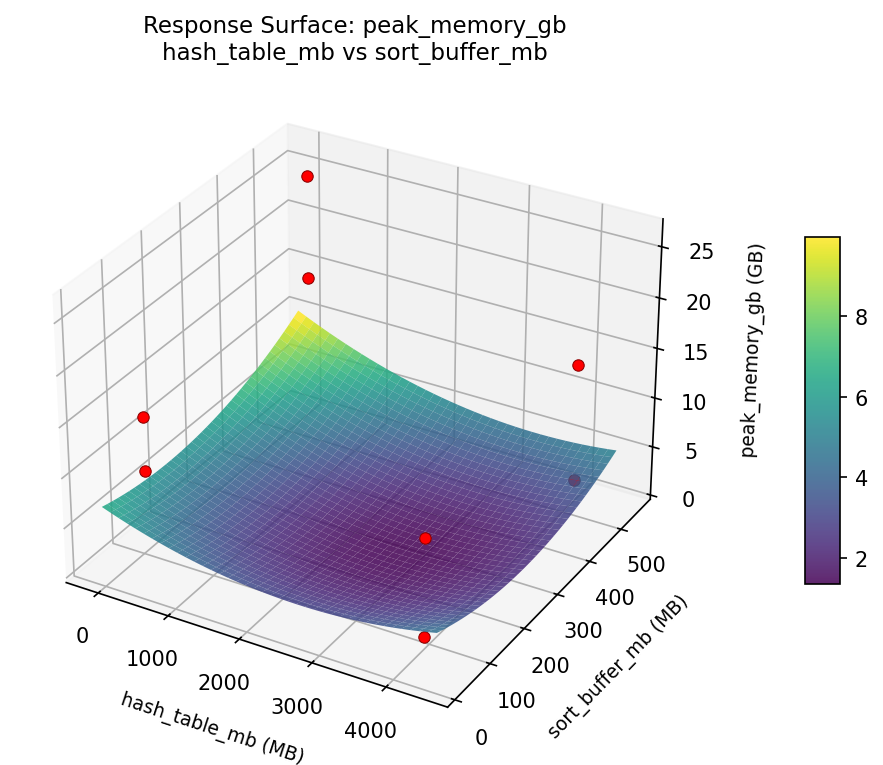
peak memory gb sort buffer mb vs broadcast threshold mb
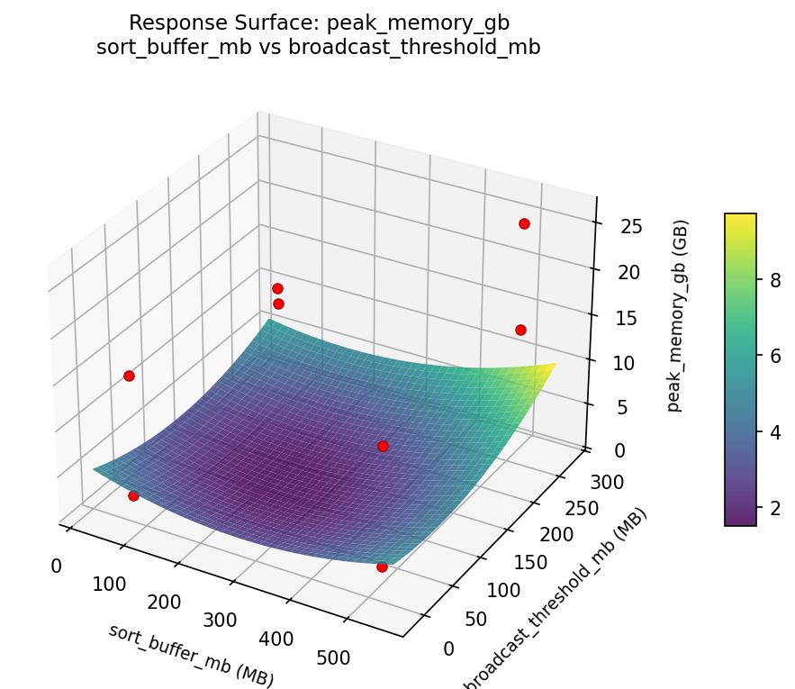
peak memory gb sort buffer mb vs partitions
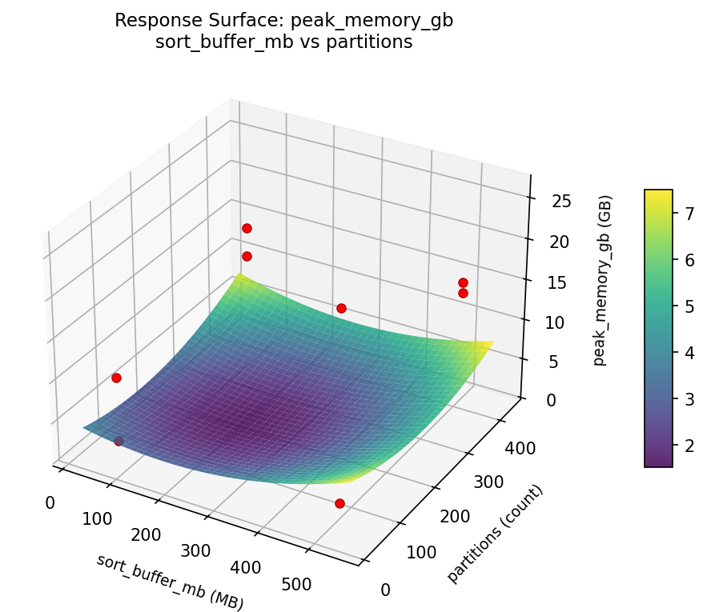
query time s broadcast threshold mb vs partitions
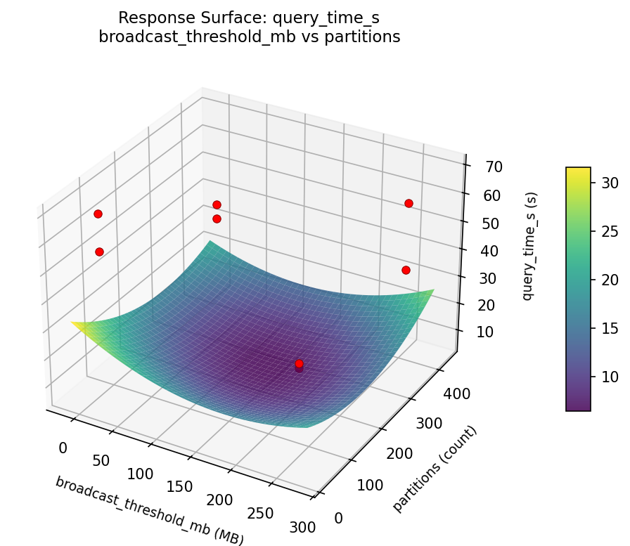
query time s hash table mb vs broadcast threshold mb
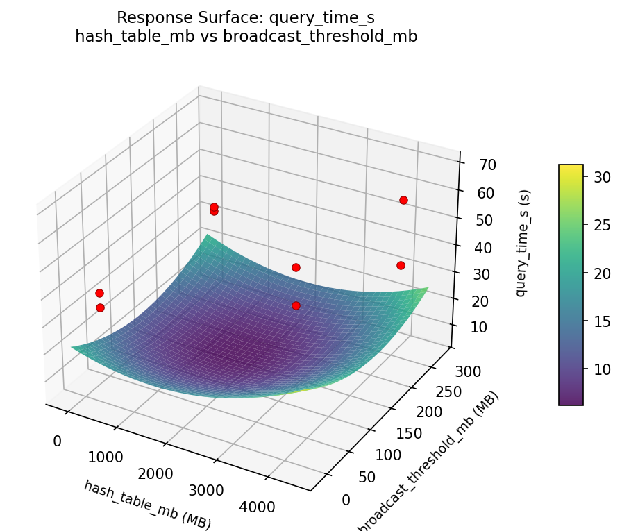
query time s hash table mb vs partitions
query time s hash table mb vs sort buffer mb
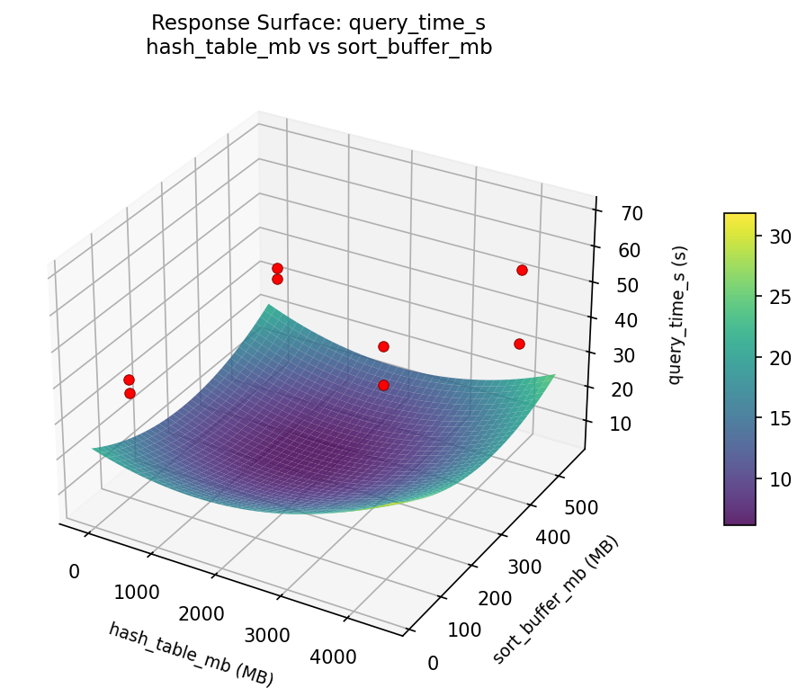
query time s sort buffer mb vs broadcast threshold mb
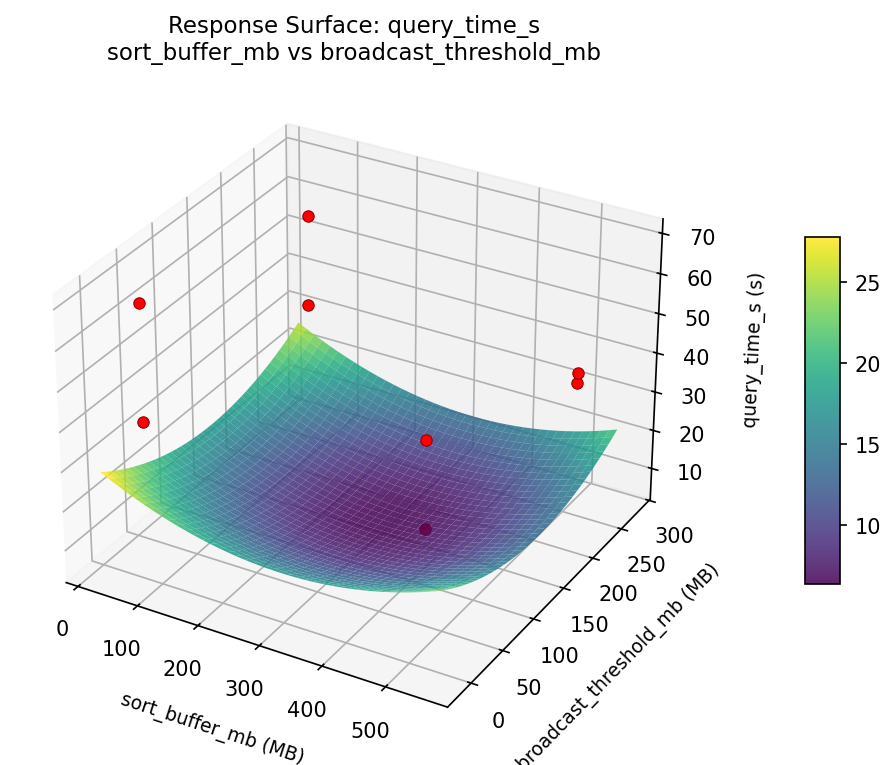
query time s sort buffer mb vs partitions
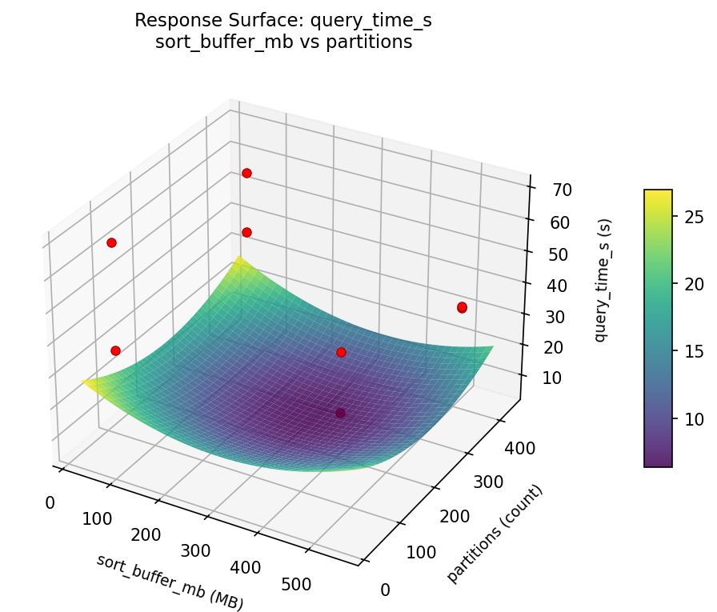